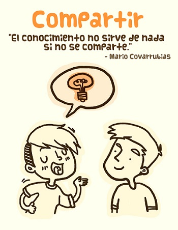

¡Hola y bienvenido a este rinconcillo de la Internesss!
Con este humilde web, que sucede a la anterior, pretendo, de vez en cuando, compartir ideas y resultados de mi trabajo con la comunidad.
Se suelen dirigir a mi por mi apellido, Ciges (estiloso y elegante sin par) y, entre otras cosas, como padre y vigués de corazón (de la noble y leal ciudad española de Vigo) soy un apasionado de la informática (desde los tiempos del 8086 que uno ya tiene una edad).
Descubrí Linux en la Universidad (hace ya casi 20 años, cuando se pedían los CDs por correo). Posteriormente, cuando Internet pasó a formar parte de mi vida, me convertí en un seguidor de la filosofía de trabajo en equipo, colaboración y mejora continua aportadas por el Software Libre.

Ilustración de la genial diseñadora mejicana Rosina Marisin
A cabeça non para ...